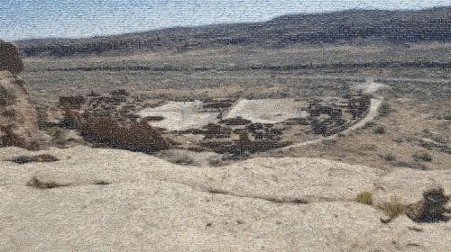
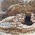

I had the idea to make my dad an image mosaic of his grandkids for Father’s day. My immediate thought was to check if R had a package for that–and it does. The RsimMosaic package is a great tool for making image mosaics. Combined with the magick package, I have all the tools I need. While I think the picture of my dad turned out great, I decided to make an archaeology related mosaic for this post.

The first step was to gather the photos. The more photos the better. My wife and I use Google Photos to store all of our pictures, so I searched the term archaeology within my photo account and used Google’s AI to make my life easier. I downloaded more than 1,000 photographs that matched this term. Not every picture was archaeology related, but it did a fairly good job. I only removed a few pictures that didn’t fit.
I also use tidyverse which is standard for me and magrittr, as I like some of the pipes not included in tidyverse. The tictoc package is a great little package for keeping track of elapsed time. Base R can take care of a lot of the functions in these packages, but I find them more convenient and easier to follow. The magick package sometimes has a problem with memory management when communicating with imagemagick, but the development version of the package has an image_destroy function that helps.
# libraries used
remotes::install_github('ropensci/magick')
library(RsimMosaic)
library(tidyverse)
library(magrittr)
library(magick)
library(tictoc)As my photos were zipped, I used R to unzip them (why not use R for everything, right?). I use the walk function from purrr as it doesn’t return any results. I have the photos stored in a subdirectory called Photos.
# photos are zipped; list files and unzip them
lfZip <- list.files("Photos", full.names = T, pattern = 'zip')
# use walk from purrr to unzip folders
walk(lfZip, unzip, exdir = 'Photos')
# list all photos
lf <- list.files("Photos", pattern = 'jpg', full.names = T)The biggest problem with the image mosaic is that all of the images have to be square. I don’t know about you, but I don’t take many square photos. RsimMosaic does have a createTiles function, but as the help file notes, the interpolation scheme does not produce high quality images. I wrote my own function to generate square tiles and again I used walk to save the results. The function crops photos in the middle, depending on whether it is a landscape or portrait orientation.
# create new directory to save results
dir.create('Tiles')
# function to create square tiles
squareTiles <- function(.x, size = 60){
img <- image_read(.x)
info <- img %>% image_info
if(info$width > info$height){
img %<>% image_scale(str_glue('x{size}'))
img %>%
image_crop(str_glue(
'{size}x{size}+{(image_info(img)$width - {size}) / 2}+0')) %>%
image_write(str_replace_all(.x,'Photos','Tiles'))
} else {
img %<>% image_scale(str_glue('{size}'))
img %>%
image_crop(str_glue(
'{size}x{size}+0+{(image_info(img)$height - {size}) / 2}')) %>%
image_write(str_replace_all(.x,'Photos','Tiles'))
}
image_destroy(img) # prevent memory problems
}
# run function
tic()
walk(lf, squareTiles)
toc()
# 4837.13 sec elapsedIt took my computer 4837 seconds (r round(4837 / 60,2) hours) to run for all 1,486 pictures. Maybe I downloaded too many, but this is going to be a lengthy process.
Here’s a comparison of two 60-pixel images, the first is from the createTiles function, and the second is from the custom function. Magick is the clear winner.
| createTiles | magick |
|---|---|
|  |
Once the tiles were ready, finally. I picked one of the photos, a picture of Pueblo Bonito, and converted it to a smaller size. Each pixel in the input image will be replaced by a 60-pixel tile, which means the resulting image is huge unless you use a very small pixel value. I’m going for big, but not too big.
image_read('Photos/20171006_135349.jpg') %>% image_scale('250') %>%
image_write('PuebloBonito.jpg')
# Create the mosaic
tic()
composeMosaicFromImageRandom('PuebloBonito.jpg', 'PuebloBonitoMosaic.jpg',
# 'Tiles', removeTiles=FALSE)
toc()
# 93.66 sec elapsedNote in case you run across this: When I ran this function the first time it failed. I did some investigation and determined that a handful of photos were saved with an 8 bit depth and the other were 24 bit depth. As there were only a few, I just removed them and proceeded.
The result is cool if you zoom in, but doesn’t look all that great. A good way to improve the look is to overlay the original photo with a 50% opacity. I also wanted to increase the contrast. I do love Photoshop and it can easily be done that route, but I think I said something about doing it all in R, so here we go.
(Warning: the following images may take a long time to load)

Increasing contrast is not difficult, but the opacity problem is more challenging. There is no native way in the magick package to change the background opacity, and because it is a jpg image, the color scheme is rgb when it needs to be rgba. The hack I used is to make all white pixels transparent on the original photo, which doesn’t really change the picture but does change it to rgba. I then modified the bitmap directly by multiplying it by 0.5. Then the images can be combined and saved to produce the final result.
original <- image_read('Photos/20171006_135349.jpg')
mosaic <- image_read('PuebloBonitoMosaic.jpg') %>%
image_contrast() # increase contrast
inf <- mosaic %>% image_info
original %<>% image_scale(str_glue('{inf$width}x{inf$height}!')) %>%
image_transparent('white')
bitmap <- original[[1]]
bitmap[4,,] <- as.raw(as.integer(bitmap[4,,]) * 0.5)
original <- image_read(bitmap)
original <- c(mosaic, original) %>% image_flatten()
image_write(original, 'PuebloBonitoMosaicMod.jpg', quality = 80)
It’s not perfect, but there are a lot of ways to tweak it to improve the result. Changing the opacity, and pixel sizes will make the biggest difference. Let me know if you have any ideas on how to improve this code, and I hope you have some fun making mosaics of your dogs, cats, or whatever you love.